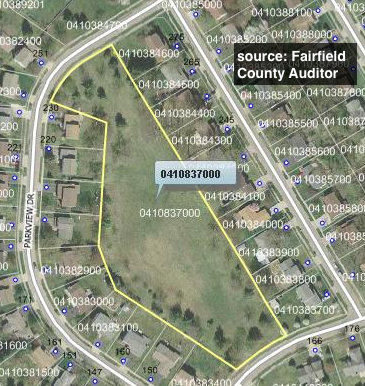

Our Park
Colony Park (the park) is a 3.12 acre plot and was originally owned by the subdivision and maintained by an HOA. This was a legitimate HOA, with a board, which included residents and the developer William Fannin. There were Easter egg hunts, cookouts, and even bonfires (some of which, got out of hand).
Most accounts indicate that the park was intended to be passive green space. When the HOA was disbanded, it turned over the deed to the Village of Pickerington. The village, and later, the city of Pickerington maintained the park, which largely consisted of mowing.
A key part of deeding the park to the city is what passive means. The city code specifies that passive space prohibits active recreational game equipment, game courts, and playing field, BUT allows for benches, picnic areas, and tot lots. Tot lots are play gyms for small children.
In 2012, the city surveyed residents about possible park development. When an effort put in a tot lot was attempted, it was blocked by some residents. An article in the Pickerington Times-Sun covered the story.

Why Develop It?
Underground gas lines and the narrow shape of the park make development tricky. And when you consider the privacy of the closest neighbors, potential for trash and noise, it is easy to dismiss doing anything with the land. Today, the park is used very little. Occaisionally you may see kids playing a pick up game of volleyball or soccer. More often, you will see folks walking their dogs through it.
You could argue that there are more young families with school-age children in our subdivision in 2015 than there were in 2012. I think a tot lot would be a fitting addition to the park. Although the author's own children are too old to get any benefit, I have certainly heard from many folks over the summer who would welcome such an addition. You could argue that such a feature may attract outsiders to our park and create parking and other issues, but this defies conventional wisdom. Take the park at Willow Pond - they have a tot lot, a pond, and a shelter (and only street parking), and those I've interviewed haven't experienced any of these issues. When folks can choose Victory Park, or Sycamore, or go to a school playground, they will do so.
Benches, Trees, & Resident Feedback
Park benches will be installed. I made a request to the city's Safety Committee for park benches in October, and they approved us to have the 2 or 3 in their inventory. They will be installed and set in concrete at locations that don't interfere with underground utilities and future possible development. In November, the city installed 17 trees, which more than made up for the ones that were removed in 2013 because of infestation. These trees look to be leftover from the SR256 construction project, and consists of Oaks, Red Oaks, and London Planetrees

I asked the Safety Committee to once again consider putting in a tot lot into the park. I was asked to survey the residents that directly surround the park, which is 10 homes on Parkview Dr. and 10 homes on Parkwood Ave. It took me 3 weeks, but I personally talked with homeowners for all 20 of these residences. There are a few that oppose, but mostly folks are for it.
An attraction like a tot lot would give a reason for neighbors (kids and adults) to meet and socialize and form community bonds. Here are the main reasons I think a tot lot would work:
1. It is a compact feature
2. We have a lot of school-aged children
3. It would still allow for the larger space of the park to be used for other things
I know that some people don't want it because they are worried about trash, crime, noise, trespassing, loss of privacy, and having their dogs disturbed. I think park visitors will mostly be respectful of the nearby homes, look after their kids, and throw away their trash. I think people will actually use the park.

I think that there is a good chance that with the right placement (non-central, away from utilities, etc.), it could move forward. Success or failure of this does not hinge on me, but instead will be the result of neighbors and city finding common ground. I am just trying to facilitate the wishes of residents to make improvements that we can all enjoy. The Safety Committee will discuss these results in December when they reconvene on 12/2/15.
-Tony